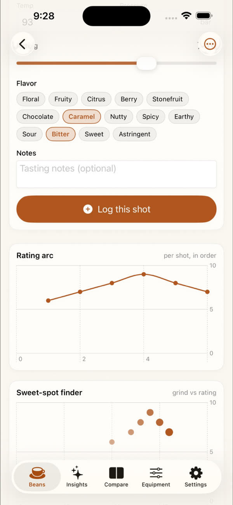
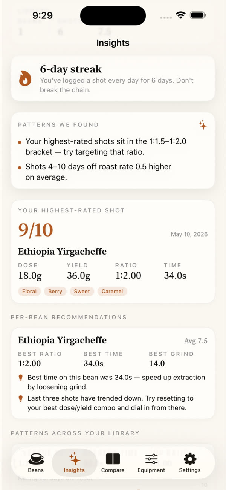
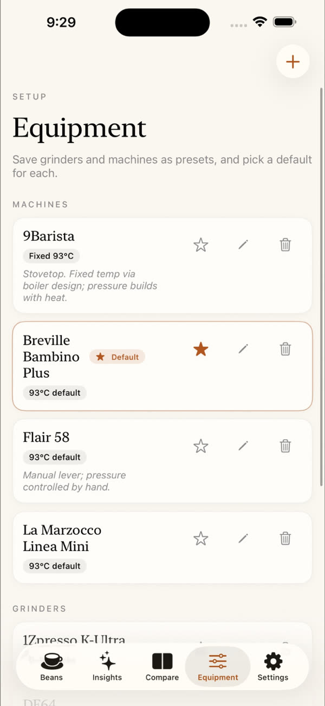
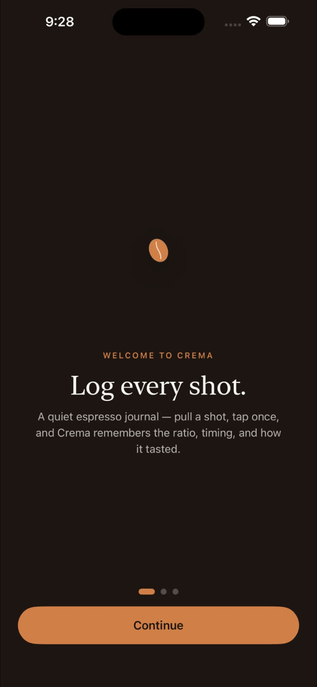
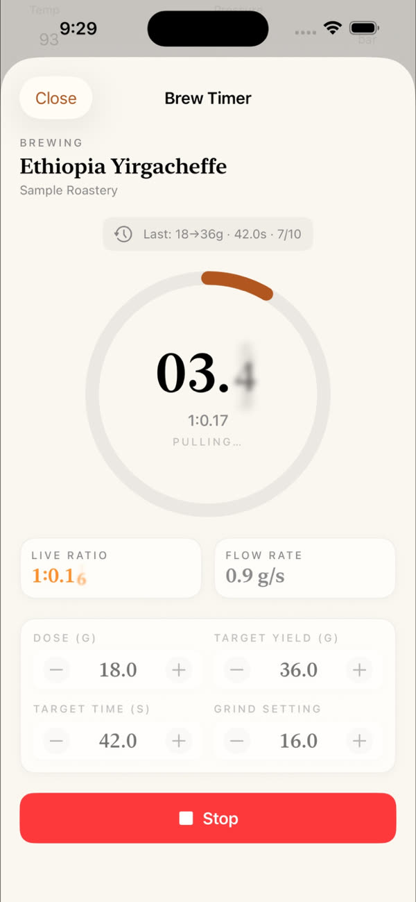
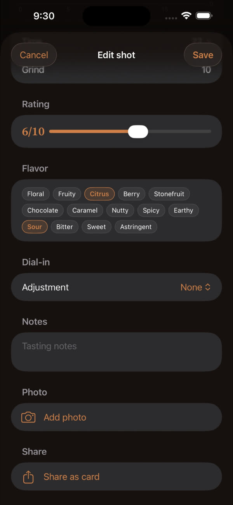
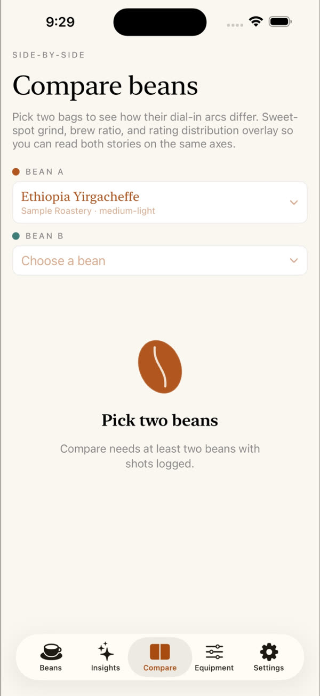

Dial in every shot.
A pocket brewing journal for espresso. Log dose, yield, time, and taste — then watch your sweet spot emerge.
Every pull, recorded. Every bean, understood.
Crema is the journal you wished you'd been keeping — Quick Log, Brew Timer, History, and Insights all in one tap.
Dose, yield, grind, taste — in seconds.
Set your grinder and machine once. Every shot is a few taps after that. Flavor chips, a 10-point rating slider, and notes you'll actually re-read.


Watch each bag dial in.
Every shot from a bag becomes a row in its journal — ratio, time, flavors, score. See the day-six bitter pull turn into a day-nine 9/10. Roast date and shots-remaining tracked automatically.
- Roast-aging reminders — degas, peak, stale-by
- Best ratio, best time, best grind — per bean
- Per-bean recommendations from your own shots
Your sweet spot, plotted.
Crema reads your library and surfaces the patterns you'd never spot in a spreadsheet — best ratio, best time, where your grind clusters when the rating spikes.
Bigger marks mean higher ratings. Where each bean's marks cluster on the X-axis is its grind sweet spot.

Built around your setup.
Crema knows the difference between a Niche Zero clicking from 10 to 16 and a Varia VS6 humming at 1,000 rpm. Set up your grinder once — units, ranges, burrs, RPM — and every shot logs against it.
Varia VS6
0–80, step 1 · 600–1,600 rpm · SSP Brew burrs
Niche Zero
0–50 dial · single dose · stock burrs
Breville Bambino+
9 bar · 93°C · 18→36g in 30s
Flair 58
Manual lever · pressure profiled
A pocket lab, at home.
Every screen earns its tap. From a clean log entry to side-by-side bag comparisons, here's the whole loop.




Stop guessing. Start dialing.
Crema is free to install. Bring your beans, your gear, and your taste — we'll handle the journal.